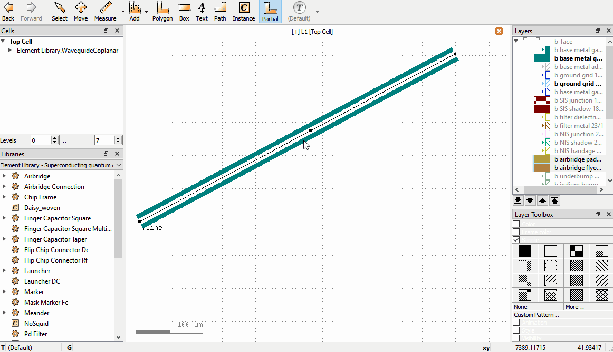

GUI Features¶
The GUI usage of KQCircuits is mostly the same as in KLayout without KQCircuits, so it is recommended to read the section KLayout Basics of the KLayout documentation. It explains for example cell hierarchy and other important concepts. In this section we explain KQCircuits-specific GUI features and highlight some useful features of the KLayout GUI.
Useful hotkeys¶
Use the following hotkeys to navigate around, and if not all parts of the geometry are visible:
*makes the full cell hierarchy visible. Otherwise only cell frames may be visible. Also accessible from Display -> Full hierarchy in the top menu.F2zooms to show the full layout (from the current top cell)Shift+F2zooms to show the currently selected cell
Introduction to Elements¶
KQCircuits provides a collection of Elements, which are building blocks for creating complex designs. The elements
are grouped into several Libraries, including the following:
The
Element Librarycontains basic elements such as waveguides, capacitors and connectorsThe
Qubit Librarycontains qubit shapesThe
Chip Librarycontains example chip designs, which are also elements
Internally, elements are built on the KLayout concept of PCells, short for parametric cells. Each element has a set of parameters, which can be changed to modify the shape or other features.
An important concept in KLayout is the distinction between cells and instances. When you place an element, KLayout first generates the corresponding PCell, and then places an Instance of that PCell in the current top cell. There can be multiple instances of the same cell, each with the exact same geometry but different location, size and magnification.
In most cases, you want to work with cell instances. This can be done in the main panel, for example clicking an element with the Select tool selects the corresponding cell instance.
PCells can internally include other PCells, and many KQC elements consist of other elements. This creates a hierarchy of cells in KLayout. The cell hierarchy is visible in KLayout in the Cells toolbox. To choose which cell is shown as Top cell in the main window, right-click a cell and select Show As New Top. The top cell is shown in bold.
Placing Elements¶
There are two ways to insert an Element into the layout:
dragging from Libraries toolbox
using “instance” tool from the toolbar
Either of these will generate the corresponding PCell and allows you to place an Instance of the PCell in If the corresponding PCell instance does not yet exist, corresponding code from the KQC library is evoked.
Here is an animation demonstrating dragging from the Libraries toolbox

Modifying Element parameters¶
If an Element is in the layout, one can change its parameters by double clicking the Element which brings up
the Object properties window. In the window there is a PCell parameters tab, where parameters can be changed.

Note that there are a few situations where the Object properties window doesn’t appear when double clicking:
The
Elementis inside another PCell. One can only change parameters of the top level Element. If one desires to change parameters of the sub-elements, the top level element should be turned static before by selecting the top level element and clicking Edit -> Selection -> Convert To Static Cell. Then, the cell can be set as new top in the Cells toolbox.Once an
Elementis converted to a static cell, the parameters can no longer be changed.Some elements have guiding shapes such as boxes or paths, which take priority in selection. To avoid selecting these by accident, one can disable each type under Edit -> Select.
Modifying waveguides¶
For some elements, the shape can be edited directly in the GUI. For example, Waveguide Coplanar,
Waveguide Composite and Spiral Resonator Polygon have paths that can be edited with the Partial tool.
The following operations are supported:
Drag a node to move it, or click to select, move, click to confirm.
Double click on an edge to create an additional node.
Click to select a node and press the
Delkey to delete a node.Drag edges to shift the edge; the neighboring nodes adjust to keep the path connected.
The following video shows these operations for a waveguide:
If the GUI paths are not visible, make sure that the option Show PCell guiding and error shapes is enabled under Display -> Cells in the KLayout setup.
Editing WaveguideComposite Nodes¶
Waveguide Composite is a very flexible element, that can be used to route complex waveguides. It can include other
elements that are automatically connected correctly inline with the waveguide, can insert meandering segments to
meet a specific waveguide length, and can include airbridge crossings or flip-chip connectors to route signals in a
3D integrated design.
A Waveguide Composite can be inserted like any other element, and the path it follows can be edited with the
Partial tool like other waveguides, as described above. However, to edit the advanced properties of each individual
Node, use the Edit Node tool in the toolbar.
With Edit Node selected, click on any node to bring up the Edit Node dialog. The currently selected node is
highlighted by a dashed rectangle. Note that only waveguide nodes that are directly under the current top cell can be
edited, and only Waveguide Composite nodes.
In the Edit Node dialog box, the position, length, and other properties can be edited. Changes are updated when
Apply is clicked. If an inline element is chosen, the element’s properties can be entered as key=value pairs, each
on a separate line. See the API documentation for the PCell parameters supported by each element.
The following video shows the workflow with the Edit Node tool:
Converting elements placed in GUI into code¶
KQCircuits includes a macro export_cells_as_code.lym that can be used to convert elements placed in GUI into code that can be used in chip PCells. For more information, see the docstring and comments in the macro. The following animation demonstrates how a chip is modified by placing elements in the GUI and how to use this macro to include those elements in PCell generation code:

The macro has special handling for waveguides (of WaveguideCoplanar type).
The code generated for them automatically detects nearby reference points of
other elements, and uses these instead of hardcoded points as the positions
of the waveguide nodes. See the Modifying waveguides section above for
instructions on how to modify WaveguideCoplanar in GUI.
In order to make waveguides connect “nicely” to ports of other elements, most
ports in KQC elements have an additional “corner refpoint”. To connect a
waveguide to port “a” of instance “x”, you should generally place its first
two points at x_port_a and x_port_a_corner. The corner point is not
needed if the next point would anyway be in the direction of
x_port_a_corner, since the purpose of the corner point is only to make
the direction of the first waveguide segment aligned with the port.